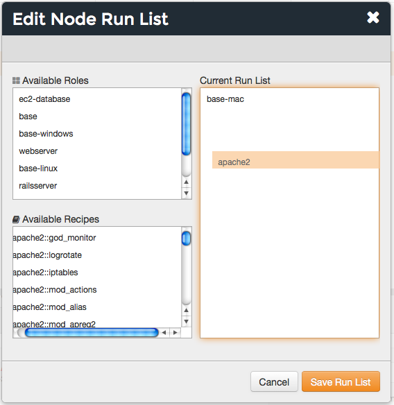
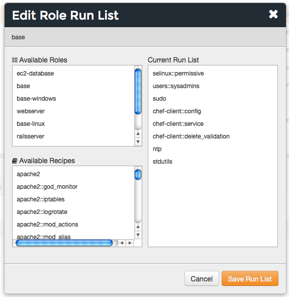
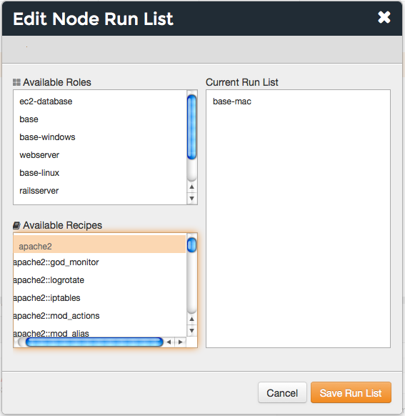
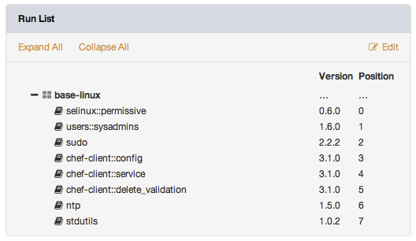
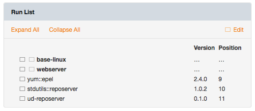
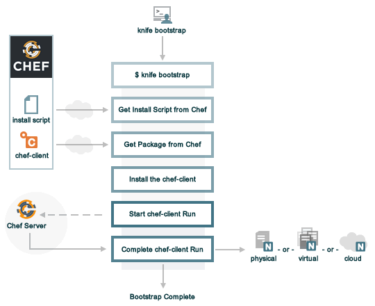
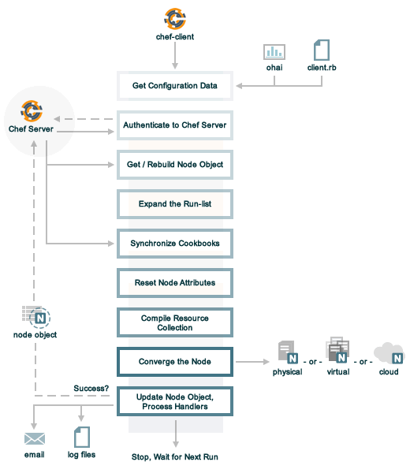

About Run-lists¶
A run-list defines all of the information necessary for Chef to configure a node into the desired state. A run-list is:
- An ordered list of roles and/or recipes that are run in the exact order defined in the run-list; if a recipe appears more than once in the run-list, the chef-client will not run it twice
- Always specific to the node on which it runs; nodes may have a run-list that is identical to the run-list used by other nodes
- Stored as part of the node object on the Chef server
- Maintained using knife, and then uploaded from the workstation to the Chef server, or is maintained using the Chef management console
Run-list Format¶
A run-list must be in one of the following formats: fully qualified, cookbook, or default. Both roles and recipes must be in quotes, for example:
'role[NAME]'
or
'recipe[COOKBOOK::RECIPE]'
Use a comma to separate roles and recipes when adding more than one item the run-list:
'recipe[COOKBOOK::RECIPE],COOKBOOK::RECIPE,role[NAME]'
Empty Run-lists¶
Use an empty run-list to determine if a failed chef-client run has anything to do with the recipes that are defined within that run-list. This is a quick way to discover if the underlying cause of a chef-client run failure is a configuration issue. If a failure persists even if the run-list is empty, check the following:
- Configuration settings in the knife.rb file
- Permissions for the user to both the Chef server and to the node on which the chef-client run is to take place
Knife Commands¶
The following knife commands may be used to manage run-lists on the Chef server.
Quotes, Windows¶
When running knife in Microsoft Windows, a string may be interpreted as a wildcard pattern when quotes are not present in the command. The number of quotes to use depends on the shell from which the command is being run.
When running knife from the command prompt, a string should be surrounded by single quotes (' '). For example:
$ knife node run_list set test-node 'recipe[iptables]'
When running knife from Windows PowerShell, a string should be surrounded by triple single quotes (''' '''). For example:
$ knife node run_list set test-node '''recipe[iptables]'''
Import-Module chef¶
The chef-client version 12.4 release adds an optional feature to the Microsoft Installer Package (MSI) for Chef. This feature enables the ability to pass quoted strings from the Windows PowerShell command line without the need for triple single quotes (''' '''). This feature installs a Windows PowerShell module (typically in C:\opscode\chef\modules) that is also appended to the PSModulePath environment variable. This feature is not enabled by default. To activate this feature, run the following command from within Windows PowerShell:
$ Import-Module chef
or add Import-Module chef to the profile for Windows PowerShell located at:
~\Documents\WindowsPowerShell\Microsoft.PowerShell_profile.ps1
This module exports cmdlets that have the same name as the command-line tools—chef-client, knife, chef-apply—that are built into Chef.
For example:
$ knife exec -E 'puts ARGV' """&s0meth1ng"""
is now:
$ knife exec -E 'puts ARGV' '&s0meth1ng'
and:
$ knife node run_list set test-node '''role[ssssssomething]'''
is now:
$ knife node run_list set test-node 'role[ssssssomething]'
To remove this feature, run the following command from within Windows PowerShell:
$ Remove-Module chef
run_list add¶
A run-list defines all of the information necessary for Chef to configure a node into the desired state. A run-list is:
- An ordered list of roles and/or recipes that are run in the exact order defined in the run-list; if a recipe appears more than once in the run-list, the chef-client will not run it twice
- Always specific to the node on which it runs; nodes may have a run-list that is identical to the run-list used by other nodes
- Stored as part of the node object on the Chef server
- Maintained using knife, and then uploaded from the workstation to the Chef server, or is maintained using the Chef management console
Use the run_list add argument to add run-list items (roles or recipes) to a node.
A run-list must be in one of the following formats: fully qualified, cookbook, or default. Both roles and recipes must be in quotes, for example:
'role[NAME]'
or
'recipe[COOKBOOK::RECIPE]'
Use a comma to separate roles and recipes when adding more than one item the run-list:
'recipe[COOKBOOK::RECIPE],COOKBOOK::RECIPE,role[NAME]'
Syntax¶
This argument has the following syntax:
$ knife node run_list add NODE_NAME RUN_LIST_ITEM (options)
Options¶
This argument has the following options:
- -a ITEM, --after ITEM
- Add a run-list item after the specified run-list item.
- -b ITEM, --before ITEM
- Add a run-list item before the specified run-list item.
Note
See knife.rb for more information about how to add certain knife options as settings in the knife.rb file.
Examples¶
The following examples show how to use this knife subcommand:
Add a role
To add a role to a run-list, enter:
$ knife node run_list add NODE_NAME 'role[ROLE_NAME]'
Add roles and recipes
To add roles and recipes to a run-list, enter:
$ knife node run_list add NODE_NAME 'recipe[COOKBOOK::RECIPE_NAME],recipe[COOKBOOK::RECIPE_NAME],role[ROLE_NAME]'
Add a recipe with a FQDN
To add a recipe to a run-list using the fully qualified format, enter:
$ knife node run_list add NODE_NAME 'recipe[COOKBOOK::RECIPE_NAME]'
Add a recipe with a cookbook
To add a recipe to a run-list using the cookbook format, enter:
$ knife node run_list add NODE_NAME 'COOKBOOK::RECIPE_NAME'
Add the default recipe
To add the default recipe of a cookbook to a run-list, enter:
$ knife node run_list add NODE_NAME 'COOKBOOK'
run_list remove¶
Use the run_list remove argument to remove run-list items (roles or recipes) from a node. A recipe must be in one of the following formats: fully qualified, cookbook, or default. Both roles and recipes must be in quotes, for example: 'role[ROLE_NAME]' or 'recipe[COOKBOOK::RECIPE_NAME]'. Use a comma to separate roles and recipes when removing more than one, like this: 'recipe[COOKBOOK::RECIPE_NAME],COOKBOOK::RECIPE_NAME,role[ROLE_NAME]'.
Syntax¶
This argument has the following syntax:
$ knife node run_list remove NODE_NAME RUN_LIST_ITEM
Options¶
This command does not have any specific options.
Note
See knife.rb for more information about how to add certain knife options as settings in the knife.rb file.
Examples¶
The following examples show how to use this knife subcommand:
Remove a role
To remove a role from a run-list, enter:
$ knife node run_list remove NODE_NAME 'role[ROLE_NAME]'
Remove a run-list
To remove a recipe from a run-list using the fully qualified format, enter:
$ knife node run_list remove NODE_NAME 'recipe[COOKBOOK::RECIPE_NAME]'
run_list set¶
Use the run_list set argument to set the run-list for a node. A recipe must be in one of the following formats: fully qualified, cookbook, or default. Both roles and recipes must be in quotes, for example: 'role[ROLE_NAME]' or 'recipe[COOKBOOK::RECIPE_NAME]'. Use a comma to separate roles and recipes when setting more than one, like this: 'recipe[COOKBOOK::RECIPE_NAME],COOKBOOK::RECIPE_NAME,role[ROLE_NAME]'.
Options¶
This command does not have any specific options.
Examples¶
None.
status¶
The following examples show how to use the knife status subcommand to verify the status of run-lists.
View status, include run-lists
To include run-lists in the status, enter:
$ knife status --run-list
to return something like:
20 hours ago, dev-vm.chisamore.com, ubuntu 10.04, dev-vm.chisamore.com, 10.66.44.126, role[lb].
3 hours ago, i-225f954f, ubuntu 10.04, ec2-67-202-63-102.compute-1.amazonaws.com, 67.202.63.102, role[web].
3 hours ago, i-a45298c9, ubuntu 10.04, ec2-174-129-127-206.compute-1.amazonaws.com, 174.129.127.206, role[web].
3 hours ago, i-5272a43f, ubuntu 10.04, ec2-184-73-9-250.compute-1.amazonaws.com, 184.73.9.250, role[web].
3 hours ago, i-226ca64f, ubuntu 10.04, ec2-75-101-240-230.compute-1.amazonaws.com, 75.101.240.230, role[web].
3 hours ago, i-f65c969b, ubuntu 10.04, ec2-184-73-60-141.compute-1.amazonaws.com, 184.73.60.141, role[web].
View status using a query
To show the status of a subset of nodes that are returned by a specific query, enter:
$ knife status "role:web" --run-list
to return something like:
3 hours ago, i-225f954f, ubuntu 10.04, ec2-67-202-63-102.compute-1.amazonaws.com, 67.202.63.102, role[web].
3 hours ago, i-a45298c9, ubuntu 10.04, ec2-174-129-127-206.compute-1.amazonaws.com, 174.129.127.206, role[web].
3 hours ago, i-5272a43f, ubuntu 10.04, ec2-184-73-9-250.compute-1.amazonaws.com, 184.73.9.250, role[web].
3 hours ago, i-226ca64f, ubuntu 10.04, ec2-75-101-240-230.compute-1.amazonaws.com, 75.101.240.230, role[web].
3 hours ago, i-f65c969b, ubuntu 10.04, ec2-184-73-60-141.compute-1.amazonaws.com, 184.73.60.141, role[web].
Management Console¶
The following sections describe how to manage run-lists when using the Chef management console.
Add Recipe¶
To add a role or recipe to a run-list:
Open the Chef management console.
Click Nodes.
Select a node.
Click Edit Run List.
In the Edit Node Run List dialog box, drag the role or recipe from the Available Roles or Available Recipes lists to the current run-list.
Click Save Run List.
Add Role¶
To add a role or recipe to a run-list:
Open the Chef management console.
Click Nodes.
Select a node.
Click Edit Run List.
In the Edit Node Run List dialog box, drag the role or recipe from the Available Roles or Available Recipes lists to the current run-list.
Click Save Run List.
Edit Node¶
To edit a run-list:
- Open the Chef management console.
- Click Nodes.
- Select a node.
- Click Edit Run List.
- In the Edit Node Run List dialog box, make your changes.
- Click Save Run List.
Edit Role¶
To edit the run-list for a role:
Open the Chef management console.
Click Policy.
Click Roles.
Select a role.
Click Edit Run List.
Make your changes.
Click Save Run List.
Remove Recipe¶
To remove a role or recipe from a run-list:
Open the Chef management console.
Click Nodes.
Select a node.
Click Edit Run List.
In the Edit Node Run List dialog box, drag the role or recipe from the Current Run List to the list of available roles or recipes.
Click Save Run List.
Remove Role¶
To remove a role or recipe from a run-list:
Open the Chef management console.
Click Nodes.
Select a node.
Click Edit Run List.
In the Edit Node Run List dialog box, drag the role or recipe from the Current Run List to the list of available roles or recipes.
Click Save Run List.
View Current¶
To view the current run-list for a node:
Open the Chef management console.
Click Nodes.
Select a node.
Click the Details tab.
The current run-list is shown in the lower right:

View Node¶
To view all of the nodes:
Open the Chef management console.
Click Nodes.
Select a node.
Select the Details tab.
The run-list for the node appears under the Run List header:

Run-lists, Applied¶
A run-list will tell the chef-client what to do when bootstrapping that node for the first time, and then how to configure that node on every subsequent chef-client run.
Bootstrap Operations¶
The knife bootstrap command is a common way to install the chef-client on a node. The default for this approach assumes that a node can access the Chef website so that it may download the chef-client package from that location.
The omnibus installer will detect the version of the operating system, and then install the appropriate version of the chef-client using a single command to install the chef-client and all of its dependencies, including an embedded version of Ruby, RubyGems, OpenSSL, key-value stores, parsers, libraries, and command line utilities.
The omnibus installer puts everything into a unique directory (/opt/chef/) so that the chef-client will not interfere with other applications that may be running on the target machine. Once installed, the chef-client requires a few more configuration steps before it can perform its first chef-client run on a node.
A node is any physical, virtual, or cloud machine that is configured to be maintained by a chef-client. A bootstrap is a process that installs the chef-client on a target system so that it can run as a chef-client and communicate with a Chef server. There are two ways to do this:
- Use the knife bootstrap subcommand to bootstrap a node using the omnibus installer
- Use an unattended install to bootstrap a node from itself, without using SSH or WinRM
The following diagram shows the stages of the bootstrap operation, and then the list below the diagram describes in greater detail each of those stages.
During a knife bootstrap bootstrap operation, the following happens:
| Stages | Description |
|---|---|
| $ knife bootstrap | On UNIX- and Linux-based machines: The knife bootstrap subcommand is issued from a workstation. The hostname, IP address, or FQDN of the target node is issued as part of this command. An SSH connection is established with the target node using port 22. A shell script is assembled using the chef-full.erb (the default bootstrap template), and is then executed on the target node. On Microsoft Windows machines: The knife bootstrap windows winrm subcommand is issued from a workstation. (This command is part of the knife windows plugin.) The hostname, IP address, or FQDN of the target node is issued as part of this command. A connection is established with the target node using WinRM over port 5985. (WinRM must be enabled with the corresponding firewall rules in place.) |
| Get the install script from Chef | On UNIX- and Linux-based machines: The shell script that is derived from the chef-full.erb bootstrap template will make a request to the Chef website to get the most recent version of a second shell script (install.sh). On Microsoft Windows machines: The batch file that is derived from the windows-chef-client-msi.erb bootstrap template will make a request to the Chef website to get the .msi installer. |
| Get the chef-client package from Chef | The second shell script (or batch file) then gathers system-specific information and determines the correct package for the chef-client. The second shell script (or batch file) makes a request to the Chef website, and then downloads the appropriate package from s3.amazonaws.com. |
| Install the chef-client | The chef-client is installed on the target node. |
| Start the chef-client run | On UNIX- and Linux-based machines: The second shell script executes the chef-client binary with a set of initial settings stored within first-boot.json on the node. first-boot.json is generated from the workstation as part of the initial knife bootstrap subcommand. On Microsoft Windows machines: The batch file that is derived from the windows-chef-client-msi.erb bootstrap template executes the chef-client binary with a set of initial settings stored within first-boot.json on the node. first-boot.json is generated from the workstation as part of the initial knife bootstrap subcommand. |
| Complete the chef-client run | The chef-client run proceeds, using HTTPS (port 443), and registers the node with the Chef server. The first chef-client run, by default, contains an empty run-list. A run-list can be specified as part of the initial bootstrap operation using the --run-list option as part of the knife bootstrap subcommand. |
The chef-client Run¶
A “chef-client run” is the term used to describe a series of steps that are taken by the chef-client when it is configuring a node. The following diagram shows the various stages that occur during the chef-client run, and then the list below the diagram describes in greater detail each of those stages.
During every chef-client run, the following happens:
| Stages | Description |
|---|---|
| Get configuration data | The chef-client gets process configuration data from the client.rb file on the node, and then gets node configuration data from Ohai. One important piece of configuration data is the name of the node, which is found in the node_name attribute in the client.rb file or is provided by Ohai. If Ohai provides the name of a node, it is typically the FQDN for the node, which is always unique within an organization. |
| Authenticate to the Chef Server | The chef-client authenticates to the Chef server using an RSA private key and the Chef server API. The name of the node is required as part of the authentication process to the Chef server. If this is the first chef-client run for a node, the chef-validator will be used to generate the RSA private key. |
| Get, rebuild the node object | The chef-client pulls down the node object from the Chef server. If this is the first chef-client run for the node, there will not be a node object to pull down from the Chef server. After the node object is pulled down from the Chef server, the chef-client rebuilds the node object. If this is the first chef-client run for the node, the rebuilt node object will contain only the default run-list. For any subsequent chef-client run, the rebuilt node object will also contain the run-list from the previous chef-client run. |
| Expand the run-list | The chef-client expands the run-list from the rebuilt node object, compiling a full and complete list of roles and recipes that will be applied to the node, placing the roles and recipes in the same exact order they will be applied. (The run-list is stored in each node object’s JSON file, grouped under run_list.) |
| Synchronize cookbooks | The chef-client asks the Chef server for a list of all cookbook files (including recipes, templates, resources, providers, attributes, libraries, and definitions) that will be required to do every action identified in the run-list for the rebuilt node object. The Chef server provides to the chef-client a list of all of those files. The chef-client compares this list to the cookbook files cached on the node (from previous chef-client runs), and then downloads a copy of every file that has changed since the previous chef-client run, along with any new files. |
| Reset node attributes | All attributes in the rebuilt node object are reset. All attributes from attribute files, environments, roles, and Ohai are loaded. Attributes that are defined in attribute files are first loaded according to cookbook order. For each cookbook, attributes in the default.rb file are loaded first, and then additional attribute files (if present) are loaded in lexical sort order. All attributes in the rebuilt node object are updated with the attribute data according to attribute precedence. When all of the attributes are updated, the rebuilt node object is complete. |
| Compile the resource collection | The chef-client identifies each resource in the node object and builds the resource collection. Libraries are loaded first to ensure that all language extensions and Ruby classes are available to all resources. Next, attributes are loaded, followed by lightweight resources, and then all definitions (to ensure that any pseudo-resources within definitions are available). Finally, all recipes are loaded in the order specified by the expanded run-list. This is also referred to as the “compile phase”. |
| Converge the node | The chef-client configures the system based on the information that has been collected. Each resource is executed in the order identified by the run-list, and then by the order in which each resource is listed in each recipe. Each resource in the resource collection is mapped to a provider. The provider examines the node, and then does the steps necessary to complete the action. And then the next resource is processed. Each action configures a specific part of the system. This process is also referred to as convergence. This is also referred to as the “execution phase”. |
| Update the node object, process exception and report handlers | When all of the actions identified by resources in the resource collection have been done, and when the chef-client run finished successfully, the chef-client updates the node object on the Chef server with the node object that was built during this chef-client run. (This node object will be pulled down by the chef-client during the next chef-client run.) This makes the node object (and the data in the node object) available for search. The chef-client always checks the resource collection for the presence of exception and report handlers. If any are present, each one is processed appropriately. |
| Stop, wait for the next run | When everything is configured and the chef-client run is complete, the chef-client stops and waits until the next time it is asked to run. |
Attribute Evaluation Order¶
The chef-client evaluates attributes in the order defined by the run-list, including any attributes that are in the run-list because of cookbook dependencies.